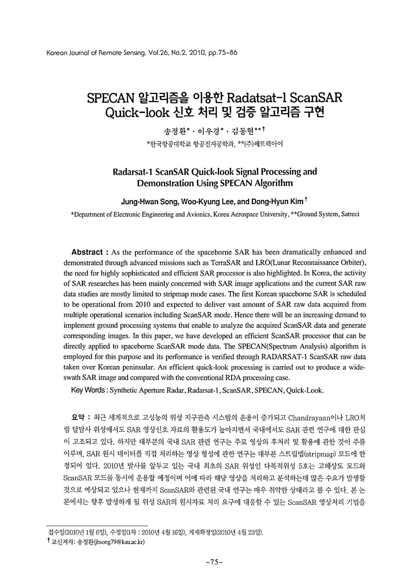

연구실적 · 국내전문학술지
SPECAN 알고리즘을 이용한 Radarsat-1 ScanSAR Quick-look 신호 처리 및 검증 알고리즘 구현
Radarsat-1 ScanSAR Quick-look Signal Processing and Demonstration Using SPECAN Algorithm

초록
최근 세계적으로 고성능의 위성 지구관측 시스템의 운용이 증가되고 Chandrayaan이나 LRO처럼 달탐사 위성에서도 SAR 영상신호 자료의 활용도가 높아지면서 국내에서도 SAR 관련 연구에 대한 관심이 고조되고 있다. 하지만 대부분의 국내 SAR 관련 연구는 주로 영상의 후처리 및 활용에 관한 것이 주를 이루며, SAR 원시 데이터를 직접 처리하는 영상 형성에 관한 연구는 대부분 스트립맵(stripmap) 모드에 한정되어 있다. 2010년 발사를 앞두고 있는 국내 최초의 SAR 위성인 다목적위성 5호는 고해상도 모드와 ScanSAR 모드를 동시에 운용할 예정이며 이에 따라 해당 영상을 처리하고 분석하는데 많은 수요가 발생할것으로 예상되고 있으나 현재까지 ScanSAR와 관련된 국내 연구는 매우 취약한 상태라고 볼 수 있다. 본 논문에서는 향후 발생하게 될 위성 SAR의 원시자료 처리 요구에 대응할 수 있는 ScanSAR 영상처리 기법을 소개하고 실제 위성 ScanSAR 원시자료에 적용하여 신호처리를 수행한 결과를 제시한다. 이를 위해 SPECAN 알고리즘을 사용한 SAR 원시데이터 처리 시스템을 개발하고 RADARSAT-1 위성의 ScanSAR원시자료에 대한 Quick-look 신호처리를 수행하였다. 최종적으로 한반도 ScanSAR 영상처리 결과를 제시하고 기존 full aperture 데이터를 처리하는 방식과 비교하여 본 논문에서 제시된 방법의 장단점과 효율성에 대해 설명한다.
사이트 원문 표기
송정환, 이우경, 김동현, “SPECAN 알고리즘을 이용한 Radarsat-1 ScanSAR Quick-look 신호 처리 및 검증 알고리즘 구현”, 대한원격탐사학회지, 제26권 2호, pp. 75–86, 2010년 4월